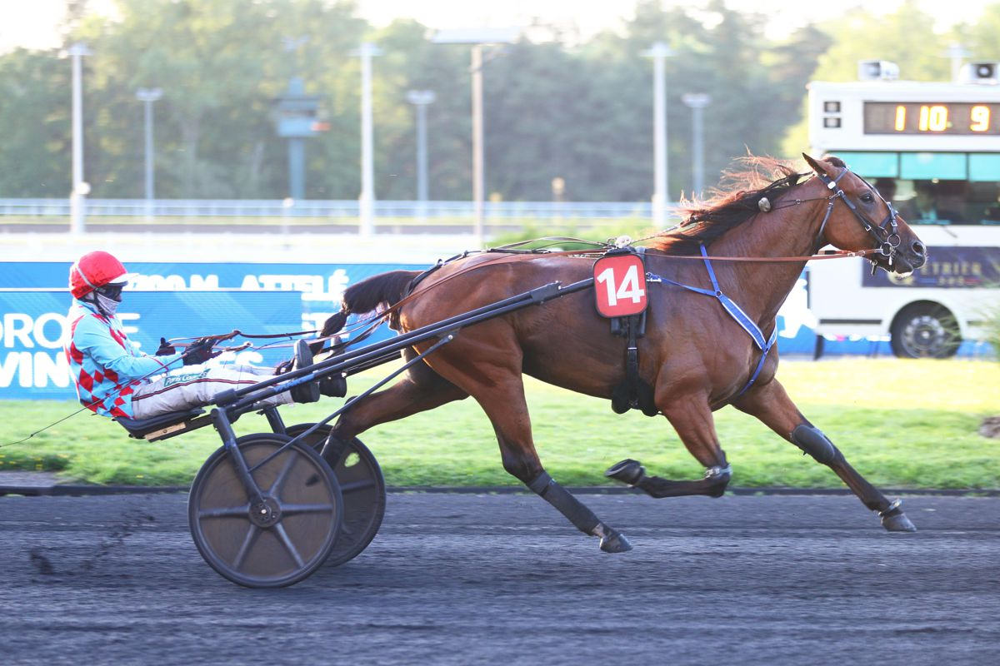

Mistral du Bois logra su primer triunfo de Grupo III en el Prix Caecilia de Vincennes
El trotador de la cuadra de Alain Dutheil se impuso con autoridad en la prueba disputada este viernes en el hipódromo parisino, firmando su primera victoria en este nivel de competición tras dos notables actuaciones previas.

Foto: paris-turf.com
Mistral du Bois rubricó una brillante actuación en el Prix Caecilia (Gr. III), celebrado este viernes en el hipódromo de Paris-Vincennes. El hijo de Drôle de Jet, entrenado por Pascal Lelièvre y conducido por Eric Raffin, se impuso con claridad tras tomar la cabeza en la recta final y controlar la carrera desde la primera posición.
La victoria supone el primer éxito de Grupo III para el representante de la casaque de Alain Dutheil, que llegaba a la cita tras dos destacadas segundas plazas en pruebas de categoría similar. El preparador Pascal Lelièvre, cuya cuadra atraviesa un gran momento de forma con dos victorias en dos jornadas consecutivas, celebró el triunfo: «Las segundas posiciones en los buenos lotes ya eran muy satisfactorias, pero una victoria siempre tiene un sabor especial. Hoy ha demostrado que puede correr con ellos. Es un verdadero buen caballo».
Make Your Day completó el doblete para la casaca del día al firmar la segunda posición. Su conductor, Franck Nivard, reconoció la superioridad del ganador: «Corrió muy bien. Tuve el recorrido que quería y aproveché que sale bien para colocarme, pero fuimos batidos por el caballo de la carrera».
— Redacción de Galope al Día